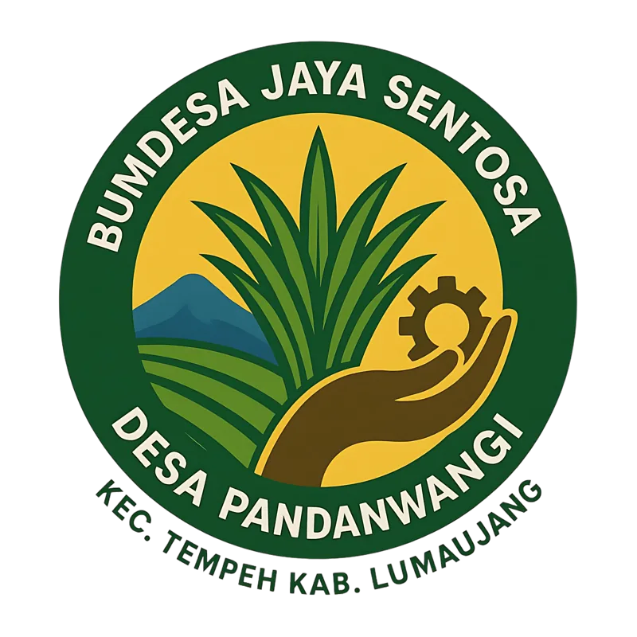
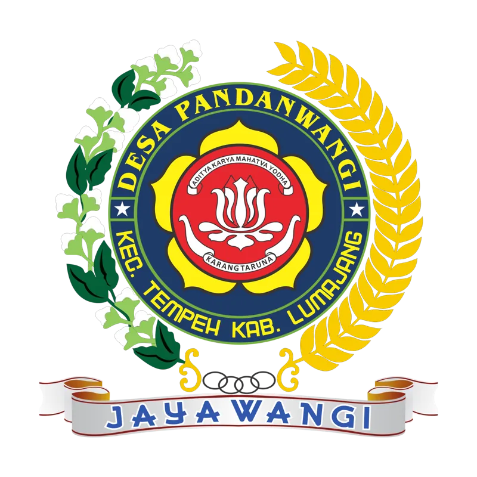
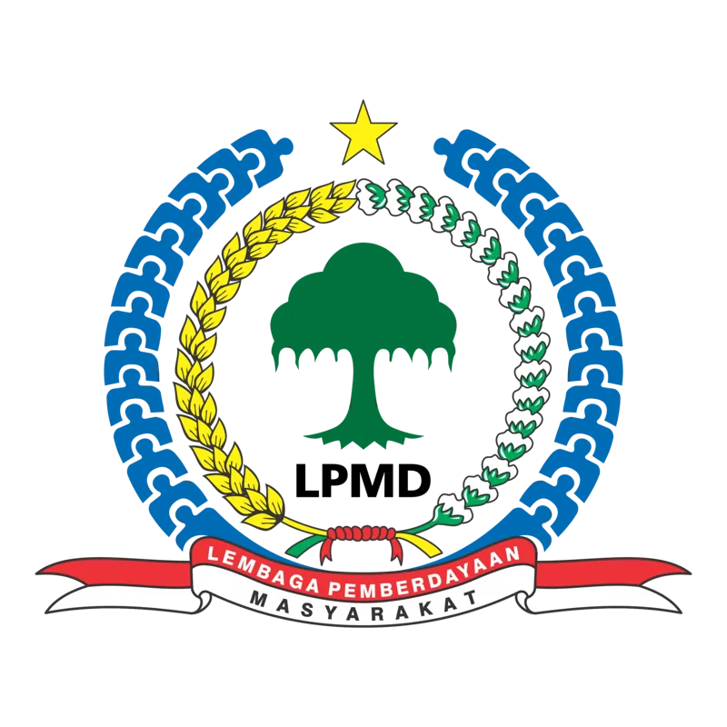
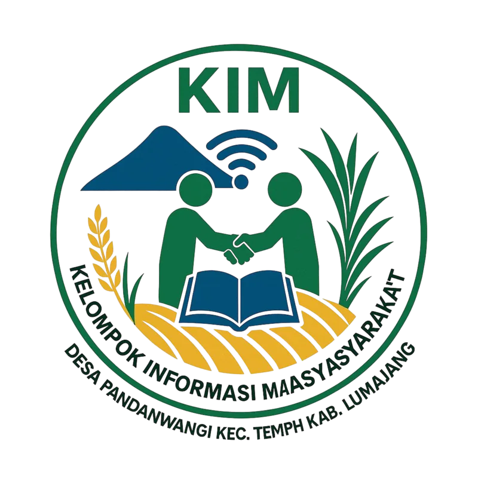
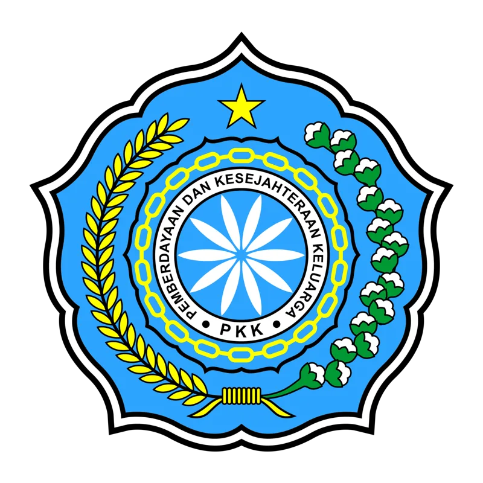

BUMDesa Jaya Sentosa
Mesin penggerak ekonomi lokal Pandanwangi. Mengelola GOR, sewa perlengkapan acara, hingga pendampingan produk UMKM warga agar naik kelas dan membuka lapangan kerja baru.
Membangun Pandanwangi tidak bisa dikerjakan pemerintah desa sendirian. Di balik hidupnya ekonomi lokal, serunya kegiatan pemuda, hingga cepatnya arus informasi desa, ada warga yang rela menyisihkan waktu dan tenaganya.
Mulai dari kepemudaan, usaha desa, pemberdayaan keluarga, hingga media kreatif, lembaga-lembaga inilah ruang kolaborasi warga sekaligus wajah nyata gotong royong Pandanwangi.
sentuh atau arahkan kursor pada kartu untuk mengintip kegiatannya →

Mesin penggerak ekonomi lokal Pandanwangi. Mengelola GOR, sewa perlengkapan acara, hingga pendampingan produk UMKM warga agar naik kelas dan membuka lapangan kerja baru.

Markasnya anak muda Pandanwangi! Ruang berkumpul arek-arek desa untuk menggelar event olahraga, aksi sosial, pelestarian budaya, sampai upgrade skill bareng.

Jembatan ide warga ke meja perencanaan desa. Mengawal aspirasi masyarakat dari tingkat dusun agar pembangunan fisik maupun pemberdayaan benar-benar sesuai kebutuhan warga.
Solusi ekonomi gotong royong warga: layanan simpan pinjam yang sehat, penyediaan kebutuhan pokok, dan usaha kolektif yang mandiri.

Tim kreatif dan media warga Pandanwangi. Mengelola informasi publik, mempromosikan potensi wisata & UMKM lokal lewat media sosial, sekaligus menghidupkan literasi digital di desa.

Penggerak ketangguhan keluarga dan perempuan desa. Aktif mengawal posyandu & gizi anak, kemandirian ekonomi rumah tangga, hingga keasrian lingkungan di tiap dusun.
Garda terdepan kerukunan tetangga: tempat pertama warga mengurus administrasi lingkungan dan menjaga kekompakan di 0 RT se-Pandanwangi.
Penghubung harmoni antar-RT: mengoordinasikan kegiatan warga lintas lingkungan di 0 RW agar gotong royong dan keamanan dusun tetap terjaga.
Data pengurus terhubung langsung dengan sistem administrasi desa, selalu mengikuti SK terbaru. Ketuk tab lembaga untuk berkenalan dengan para pengurusnya!
Info jadwal pelayanan, kegiatan Karang Taruna, sampai konten seru seputar desa: semua bisa diikuti lewat saluran WhatsApp dan media sosial resmi kami.
Gabung Komunitas & Medsos Desa →